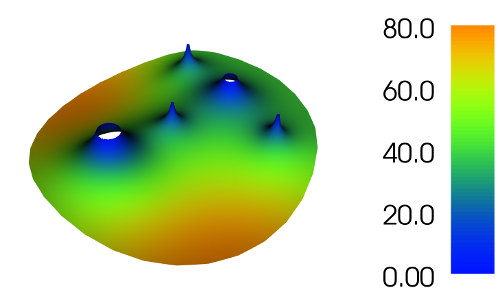

About me
I am a postdoctoral researcher in the Institute of Genetics at the University of Bonn in the group of Prof.Dr. Raoul-Martin Memmesheimer. My email address is wbraun (at) uni-bonn (dot) de.ReserarchGate ORCID
Research interests
I am generally interested in computational and mathematical neuroscience with an emphasis on stochastic dynamics. Specifically, I work on these topics:-

Dynamics and computation in spiking neural networks
First-passage problems (picture shows mean exit time for a Brownian motion from a disk with small absorbing holes of different sizes- the mean exit time decreases near the absorbing holes)
Neuronal adaptation with varying timescales
- Correlations and dynamics in non-renewal stochastic neuron models
-
Numerical solution of Fokker-Planck and backward Kolmogorov PDEs by finite-element methods
Analysis of neural data
Artifical neural networks and deep learning.